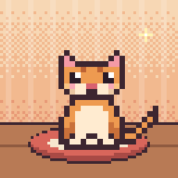

Support
Contact: ask a question or report a problem by opening an issue (a free GitHub account is needed). Please don't post personal information there; issues are public.
Purchases
How do I restore packs I bought?
Packs are permanent and belong to your Apple Account. Use Restore Purchases: on the first screen when you start Bitz on a new iPhone or after reinstalling, in the Shop, or in Settings › Purchases. Packs that are out of season are restored too. Restoring never changes your rooms or outfits.
Does Restore Purchases bring back my cat?
No. It restores purchases only. Your cat, stars and progress are stored on your device; to move them, export a backup in Settings › About & Support › Manage data and restore it on the new device. A device backup that includes app data also works.
Why can't I see a pack in the Shop?
Some packs are seasonal and only offered in their season. Packs you already own always stay yours.
Health and steps
Connecting Apple Health is optional. Bitz only reads today's step count on your device to celebrate your walking goal. You can turn it off in the Health app (Sharing › Apps › Bitz).
Widgets
Touch and hold the Home Screen, tap Edit › Add Widget, and choose Bitz. Widgets show a snapshot of your cat and refresh through the day; open the app for the latest moment.
Nearby Friends
Visits need two devices with Bitz, near each other, both with Nearby Friends turned on and the app open. Bitz asks for Local Network access the first time you turn it on.
Destek
İletişim: bir soru sormak ya da sorun bildirmek için bir kayıt aç (ücretsiz bir GitHub hesabı gerekir). Kayıtlar herkese açıktır; lütfen kişisel bilgi paylaşma.
Satın alımlar
Aldığım paketleri nasıl geri yüklerim?
Paketler kalıcıdır ve Apple Hesabına aittir. Satın Alımları Geri Yükle'yi kullan: yeni bir iPhone'da ya da yeniden yükledikten sonra Bitz'i başlattığında ilk ekranda, Dükkân'da veya Ayarlar › Satın Alımlar içinde. Mevsimi geçmiş paketler de geri yüklenir. Geri yükleme odalarını ya da kıyafetlerini değiştirmez.
Satın alımları geri yüklemek kedimi de geri getirir mi?
Hayır. Yalnızca satın alımları geri yükler. Kedin, yıldızların ve ilerlemen cihazında saklanır; taşımak için Ayarlar › Hakkında ve Destek › Verileri yönet bölümünden bir yedek dışa aktar ve yeni cihazda geri yükle. Uygulama verilerini içeren bir cihaz yedeği de işe yarar.
Bir paketi Dükkân'da neden göremiyorum?
Bazı paketler mevsimliktir ve yalnızca kendi mevsiminde sunulur. Sahip olduğun paketler her zaman senin kalır.
Sağlık ve adımlar
Apple Sağlık'ı bağlamak isteğe bağlıdır. Bitz, yürüyüş hedefini kutlamak için yalnızca günün adım sayısını cihazında okur. Sağlık uygulamasından (Paylaşma › Uygulamalar › Bitz) kapatabilirsin.
Widget'lar
Ana ekrana dokunup basılı tut, Düzenle › Widget Ekle'ye dokun ve Bitz'i seç. Widget'lar kedinin bir anını gösterir ve gün içinde yenilenir; en güncel an için uygulamayı aç.
Yakındaki Arkadaşlar
Ziyaretler için Bitz yüklü, birbirine yakın, ikisinde de Yakındaki Arkadaşlar açık ve uygulama açık iki cihaz gerekir. Bitz, özelliği ilk açtığında Yerel Ağ izni ister.